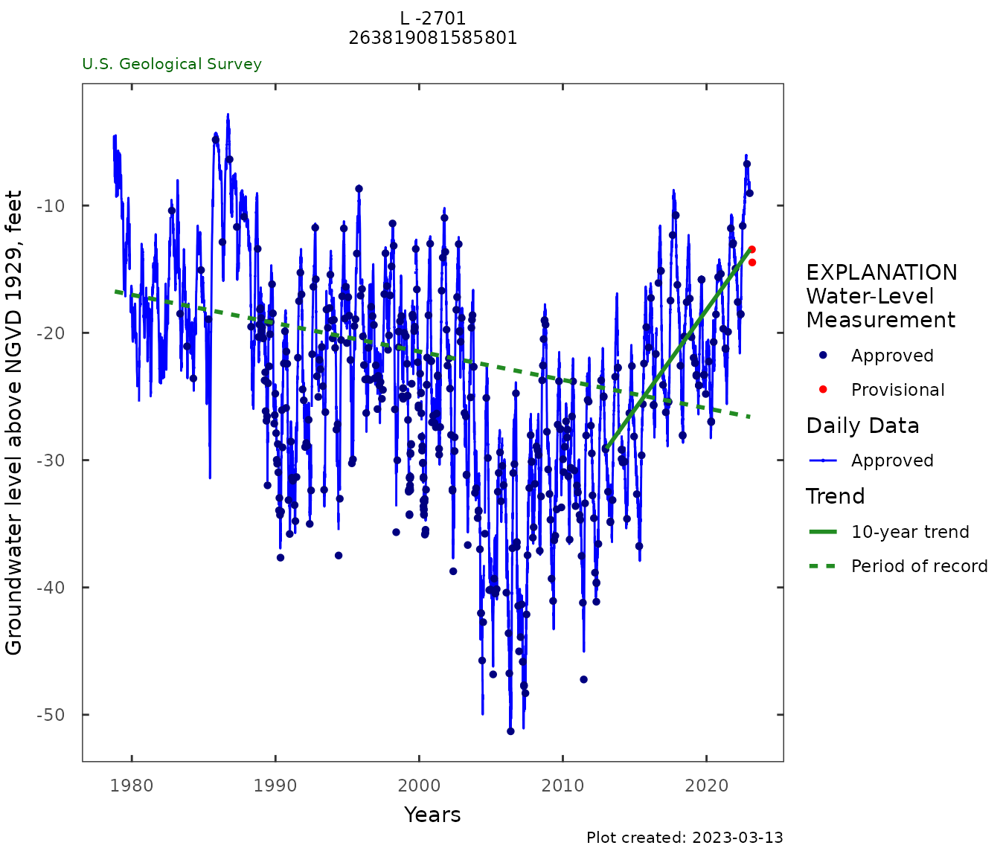
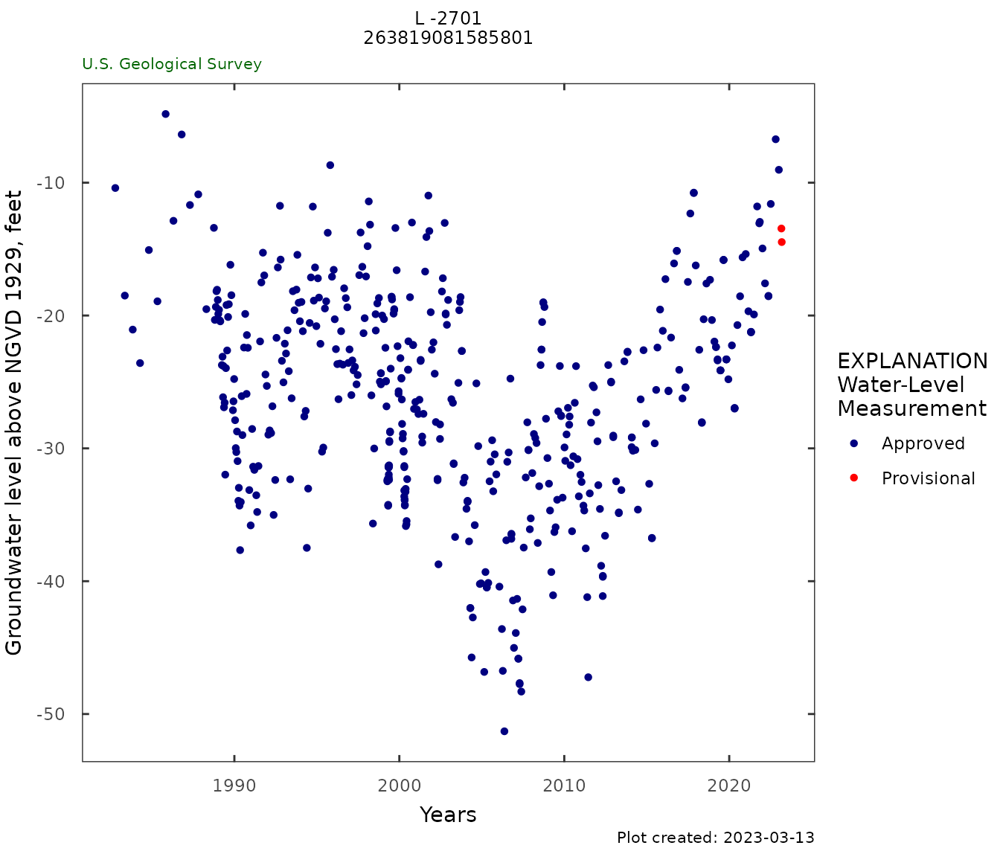

This vignette shows how to use HASP and other R tools to reproduce:
https://fl.water.usgs.gov/mapper/waterlevel_site_info.php?site=263819081585801
Site Information
263819081585801 L -2701 |
|
Get data using dataRetrieval
|
Using
|
Using the example data provided in the package:
|
Water Level Data and Analysis
Weekly frequency
weekly_frequency_plot(gw_level_dv,
date_col = "Date",
value_col = "X_62610_00001",
approved_col = "X_62610_00001_cd",
plot_title = site_title,
y_axis_label = "Groundwater level above NGVD 1929, feet")
weekly_table <- weekly_frequency_table(gw_level_dv,
parameter_cd = "62610")
head(weekly_table, 10)|
|
Weekly frequency analysis of daily maximum water level record. Only showing the first 10 rows for this example:
|

Daily 2-year
daily_gwl_2yr_plot(gw_level_dv,
parameter_cd = "62610",
plot_title = site_title,
historical_stat = "mean",
month_breaks = TRUE,
y_axis_label = "Groundwater level above NGVD 1929, feet")
daily_table <- daily_frequency_table(gw_level_dv,
date_col = "Date",
value_col = "X_62610_00001",
approved_col = "X_62610_00001_cd")
head(daily_table, n = 10)|
|
Statistics of maximum daily water level record (DOY = day of year). Only showing the first 10 rows for this example:
|

Daily value trends
y_label <- dataRetrieval::readNWISpCode("62610")$parameter_nm
gwl_plot_all(gw_level_dv,
gwl_data,
y_label = y_label,
parameter_cd = parameterCd,
plot_title = site_title,
add_trend = TRUE, flip_y = FALSE)
gw_level_dv %>%
rename(value = X_62610_00001) %>%
site_data_summary()
gw_monthly <- monthly_mean(gw_level_dv)
kendell_test_5_20_years(gw_monthly,
seasonal = TRUE,
date_col = "mid_date",
value_col = "mean_va")|
 |
Summary statistics for maximum daily water level measurements:
Results of trend analysis on maximum daily water levels:
|
Field GWL values
gwl_plot_all(NULL, gwl_data,
y_label = y_label,
parameter_cd = parameterCd,
plot_title = site_title,
flip_y = FALSE)
site_data_summary(gwl_data, "sl_lev_va")|
 |
Summary statistics for manual water level measurements
|